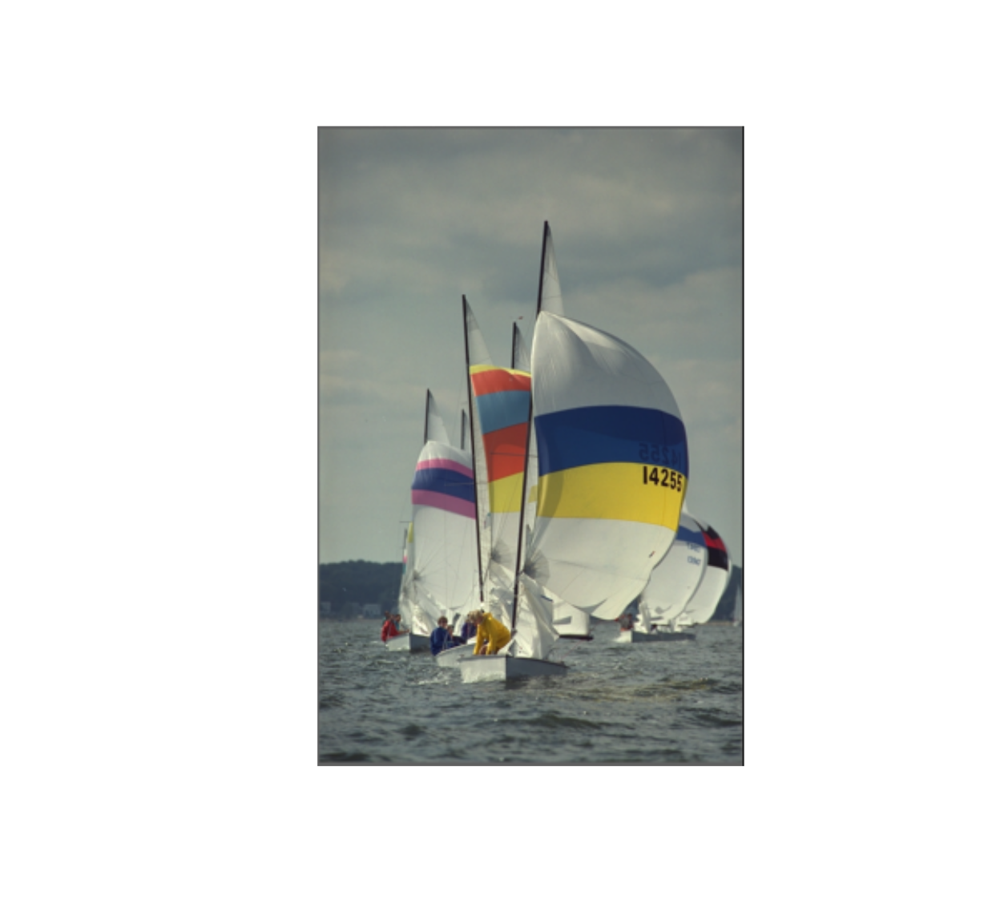
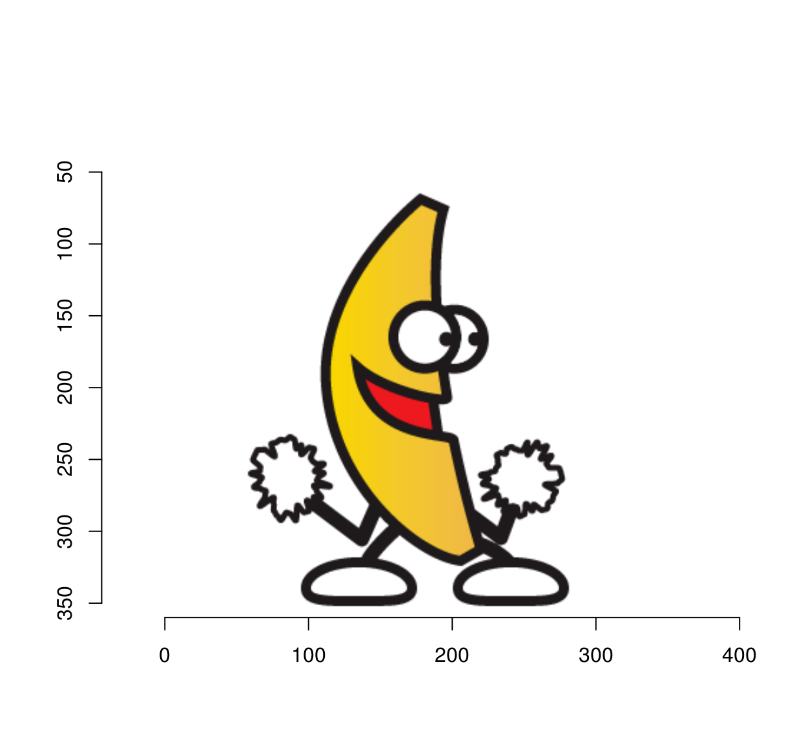
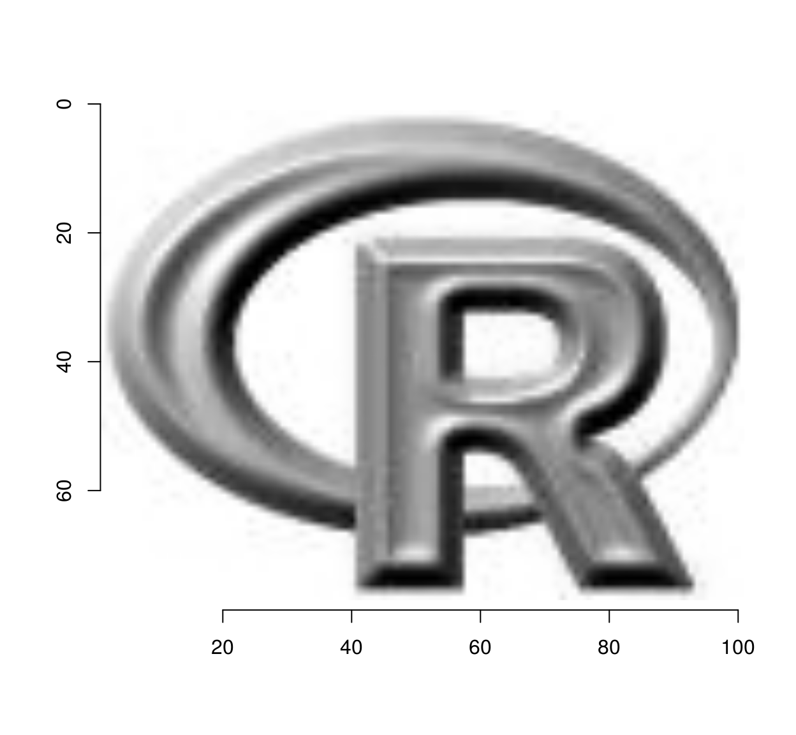
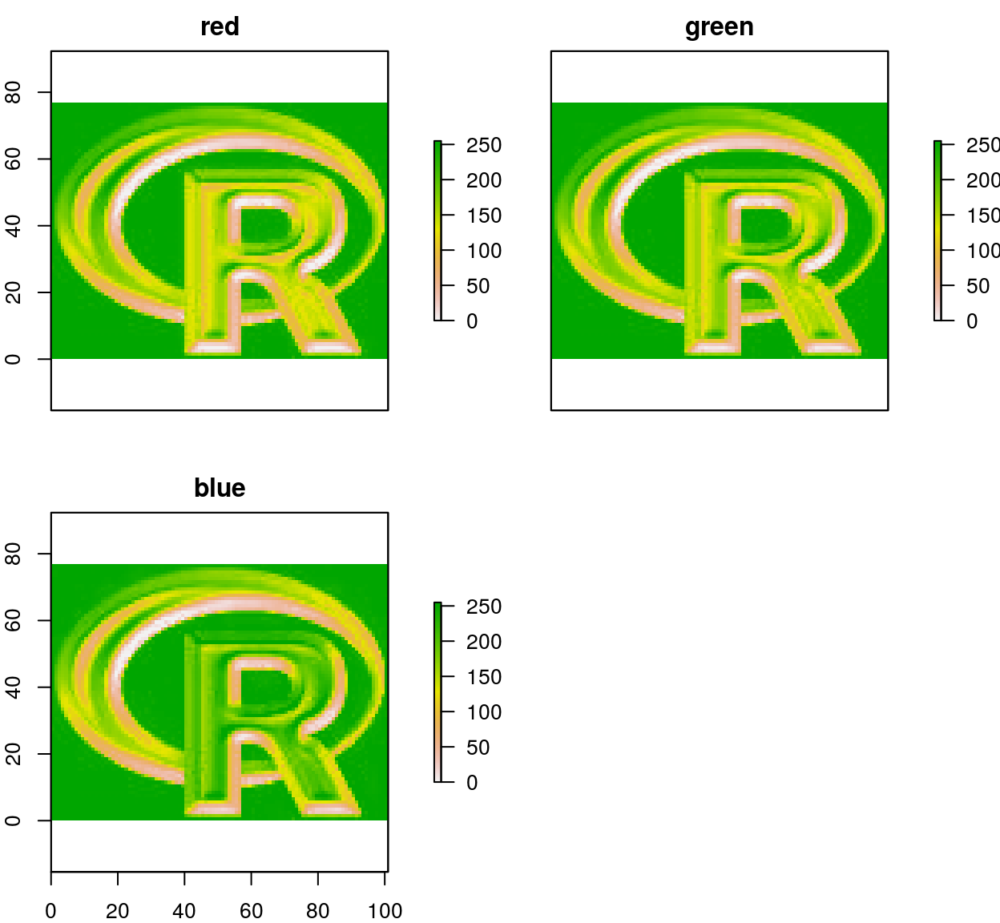
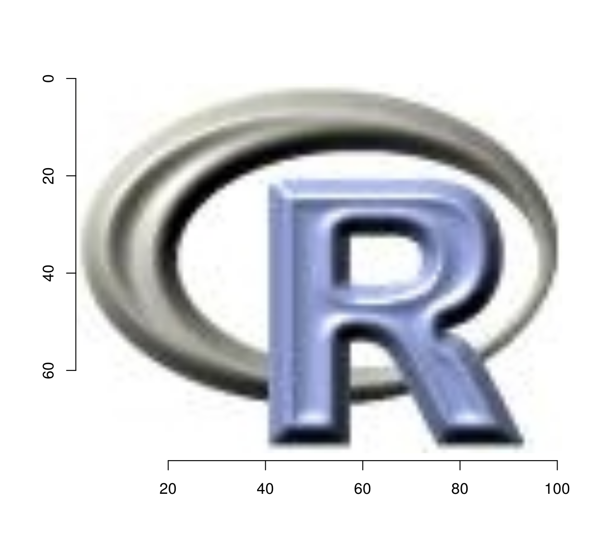

Interfacing with other R packages for image processing
Simon Barthelmé
There are several R packages that provide image processing features and they all use a slightly different format for storing their data. If you need to use imager along with another package, you’ll need functions that convert image data back and forth. I’ll list a few such functions, but I’d welcome contributions for more.
1 rasters from base graphices (grDevices)
Objects of class raster are R’s standard way of representing images for plotting. Use:
library(imager)
rst <- as.raster(boats)
plot(rst)
as.cimg(rst) #Convert back## Image. Width: 256 pix Height: 384 pix Depth: 1 Colour channels: 32 magick
Use the following functions (with thanks to Jan Wijffels): because of a bug in R CMD check, they’re called “magick2cimg” and “magick2imlist”, and not “as.cimg” and “as.imlist”.
library(magick)
#A dancing banana
banana <- image_read("https://jeroenooms.github.io/images/banana.gif")
magick2cimg(banana,alpha="flatten") %>% plot## Warning in plot.cimg(.): Showing first frame
magick2imlist(banana) #frames are stored along zNote the “alpha” argument, which determines what to do with the alpha channel. “rm” removes it, “keep” keeps it, and “flatten” flattens the image on a white background.
3 The raster package
Raster objects from the raster package are not to be confused with the “raster” class for plotting (from grDevices). The raster package specialises in spatial data like map tiles.
library(raster)## Loading required package: sp##
## Attaching package: 'sp'## The following object is masked from 'package:imager':
##
## bbox##
## Attaching package: 'raster'## The following object is masked from 'package:magrittr':
##
## extractlogo <- raster(system.file("external/rlogo.grd", package="raster"))
as.cimg(logo) %>% plot
##Import RasterBrick
b <- brick(system.file("external/rlogo.grd", package="raster"))
##Colour channels are stored as layers
plot(b)
##Convert and stack
as.imlist(b) %>% imappend("c") %>% plot
There’s no attempt to preserve meta-data in the conversion, so you’ll have to keep track of it yourself. Also, be careful with NAs (missing values), there’s almost no support in imager for them!
4 spatstat’s im objects
spatstat stores images as “im” objects. imager provides cimg2im and im2cimg for conversion.
grayscale(boats) %>% cimg2im %>% plot
NB: spatstat only supports grayscale.
5 Other packages
Generally speaking if your image data is under the form of a matrix (or data.frame) it should be easy enough to get it into imager using as.cimg. Because pixels might be recorded in a different order, you may need some combination of imrotate, mirror and permute_axes to get things the right side up.